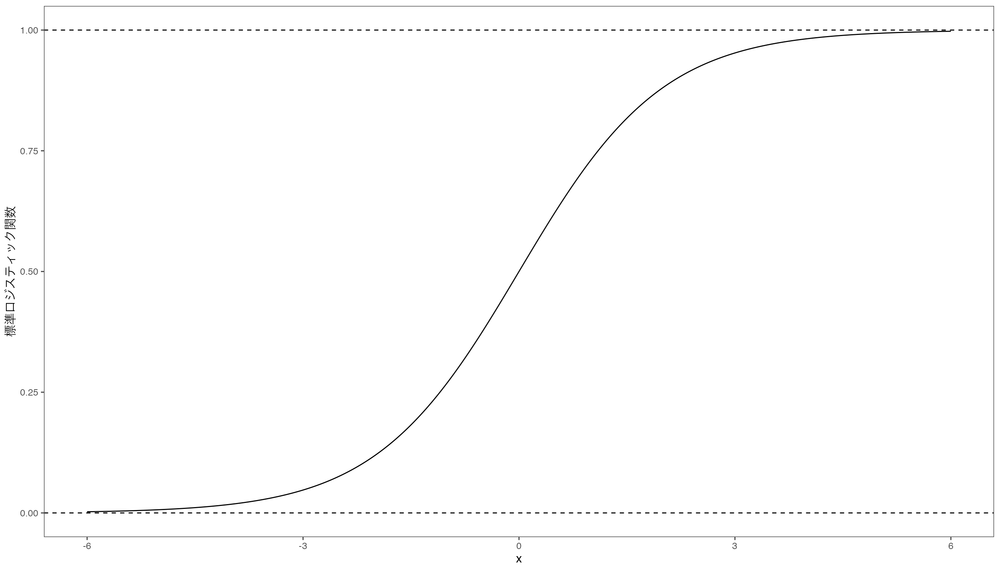
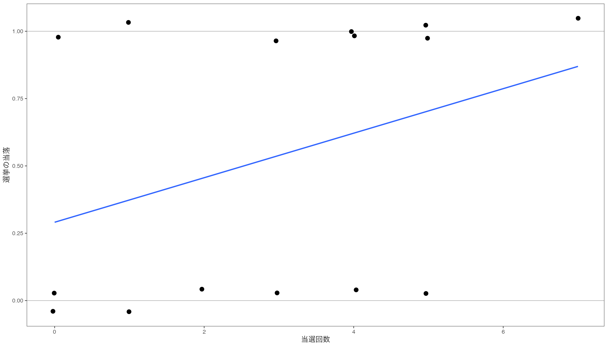
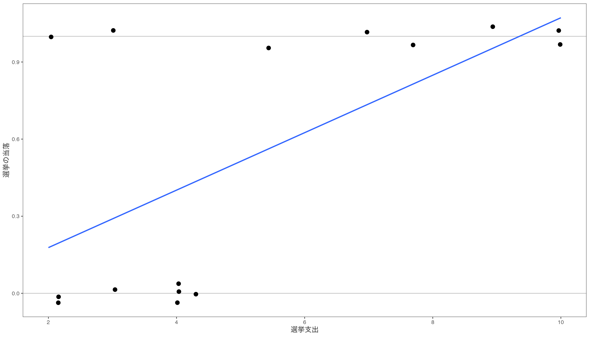

knitr::opts_chunk$set(dev = "ragg_png")
library(tidyverse) # とりあえずこれ
library(ggthemes) # ggplot2のテーマ
library(knitr) # 作表
library(kableExtra) # 作表の拡張
library(scales) # 軸の単位を制御
library(modelsummary) # モデルのまとめ
theme_set(theme_few(base_size = 12))
update_geom_defaults("point", list(size = 3))プレゼミ2023
ロジスティック回帰
Soichi Matsuura
交差項の復習
準備
交差項で何が分かるのか
説明変数\(X\)が応答変数\(Y\)に与える影響(直接効果)に対して，別の説明変数\(Z\)が与える影響がある場合，\(X\)と\(Z\)の交差項\(X \times Z\)をモデルに組み入れることで，\(X\)の影響が\(Z\)の値によってどのように変化するかを分析することができる。
\[ Y = \beta_0 + \beta_1 X + \beta_2 Z + \beta_3 X \times Z + \varepsilon \]
この\(X \times Z\)を交差項(interaction term)とよびます。
ダミー変数の交差項
前回導入したカテゴリーに属するか否かを表すダミー変数と連続変数の交差項について復習する。 応答変数\(Y\)を説明変数\(X\)とダミー変数\(D\)で回帰するモデルを考える。 \[ Y = \alpha + \beta _1 X + \beta _2 D + \beta _3 (X \times D) + \varepsilon \]
ダミー変数の交差項
\(D=1\)の場合
\[ \begin{aligned} Y &= \alpha + \beta _1 X + \beta _2 1 + \beta _3 (X \times 1) + \varepsilon\\ &= (\alpha + \beta _2) + (\beta _1 + \beta _3) X + \varepsilon\\ \end{aligned} \]
\(D=0\)の場合
\[ \begin{aligned} Y &= \alpha + \beta _1 X + \beta _2 \times 0 + \beta _3 (X \times 0) + \varepsilon\\ &= \alpha + \beta _1 X + \varepsilon\\ \end{aligned} \]
ダミー変数の交差項
前回導入したダミー変数との交差項は，ダミー変数の値によって，切片や傾きがどのように変化するかを分析することができましたが，ここでは量的変数と量的変数の交差項のケースを考えます。
交差項を入れた回帰分析の注意点
回帰分析で交差項を入れる場合の注意点は次の4
- 条件付仮説(たとえば，十分に\(Z\)が大きいとき，\(X\)は\(Y\)に影響を与える，とか)を検証する場合に，交差項を使う。
- 交差項を入れるときは，交差項を構成する変数をそれぞれ回帰モデルに入れる。
- 交差項を構成する変数の回帰係数はそのまま解釈できない。
- 分析結果として，限界効果と標準誤差を示す。
交差項を入れた回帰分析の注意点
数式で確認すれば分かりやすいです。 回帰モデルが
\[ Y = \beta_0 + \beta_1 X + \beta_2 Z + \beta_3 X \times Z + \varepsilon \]
であるとき，\(X\)の影響は，\(Y\)を\(X\)で偏微分することで求められます。
\[ \frac{\partial Y}{\partial X} = \beta_1 + \beta_3 Z \]
限界効果
- この式から，\(Z\)の値によって，\(X\)の影響が変化することが分かります。
- \(\beta_1\)の値だけでは，\(X\)の影響を正確に評価することができません。
- \(Z\)の値によって，\(X\)の影響が変化することを示すためには，\(Z\)の値を変化させたときの\(\beta_1\)の値を示す必要がある。
- これを限界効果(marginal effect)とよぶ
広告宣伝費を事例とした交差項の分析
以下の分析で利用するためのデータを読み込みます。
df <- read_csv("data/adv_2023.csv") # データの読み込み
df <- df %>%
select(-拡販費) %>% # 必要ないデータを除去
filter(決算月数 == 12) %>% # 決算月数が12のデータを抽出
filter(広告宣伝費 > 0) # 広告宣伝費が0のデータを除去
glimpse(df)Rows: 8,632
Columns: 13
$ 日経会社コード <chr> "0000001", "0000001", "0000003", "0000003", "0000003", …
$ 企業名称 <chr> "極洋", "極洋", "日本水産", "日本水産", "日本水産", "日…
$ 決算期 <chr> "2006/03", "2007/03", "2006/03", "2007/03", "2008/03", …
$ 決算種別 <dbl> 10, 10, 10, 10, 10, 10, 10, 10, 10, 10, 10, 10, 10, 10,…
$ 連結基準 <dbl> 1, 1, 1, 1, 1, 1, 1, 1, 1, 1, 1, 1, 1, 1, 1, 1, 1, 1, 1…
$ 決算月数 <dbl> 12, 12, 12, 12, 12, 12, 12, 12, 12, 12, 12, 12, 12, 12,…
$ 業種 <dbl> 235341, 235341, 235341, 235341, 235341, 235341, 235341,…
$ 資産合計 <dbl> 65049, 66459, 384819, 404173, 396739, 385462, 383924, 4…
$ 売上高 <dbl> 152899, 157088, 539653, 552871, 533970, 505250, 481574,…
$ 販管費 <dbl> 13702, 14455, 95566, 98200, 100394, 98413, 99938, 10490…
$ 広告宣伝費 <dbl> 304, 279, 2699, 2569, 2953, 2568, 2636, 3160, 3009, 288…
$ 研究開発費 <dbl> 193, 188, 3083, 3377, 3718, 3803, 3994, 4499, 4809, 361…
$ 設備投資額 <dbl> 897, 1841, 17186, 16031, 19105, 28872, 21121, 18633, 16…以下では，応答変数として売上高，説明変数として広告宣伝費と設備投資額を使います。
記述統計と散布図の表示
主要変数3つの記述統計をみます。 ここではsummary()関数を使います。
売上高 広告宣伝費 設備投資額
Min. : 54 Min. : 1 Min. : 1
1st Qu.: 26299 1st Qu.: 250 1st Qu.: 771
Median : 84923 Median : 1284 Median : 3078
Mean : 448013 Mean : 9912 Mean : 28789
3rd Qu.: 277604 3rd Qu.: 6158 3rd Qu.: 12271
Max. :30225681 Max. :509653 Max. :4069225
NA's :540 作表 skimr
skimrパッケージで作表
| Name | df3 |
| Number of rows | 8632 |
| Number of columns | 3 |
| _______________________ | |
| Column type frequency: | |
| numeric | 3 |
| ________________________ | |
| Group variables | None |
Variable type: numeric
| skim_variable | n_missing | complete_rate | mean | sd | p0 | p25 | p50 | p75 | p100 | hist |
|---|---|---|---|---|---|---|---|---|---|---|
| 売上高 | 0 | 1.00 | 448013.23 | 1522677.66 | 54 | 26298.75 | 84923.0 | 277604.00 | 30225681 | ▇▁▁▁▁ |
| 広告宣伝費 | 0 | 1.00 | 9911.51 | 34054.36 | 1 | 250.00 | 1283.5 | 6158.00 | 509653 | ▇▁▁▁▁ |
| 設備投資額 | 540 | 0.94 | 28788.64 | 156138.90 | 1 | 771.25 | 3078.5 | 12270.75 | 4069225 | ▇▁▁▁▁ |
作表 summarytools
summarytoolsパッケージのdescr()関数を使って作表
Rコード
Descriptive Statistics
df3
N: 8632
Mean Std.Dev Min Q1 Median Q3 Max
---------------- ----------- ------------ ------- ---------- ---------- ----------- -------------
広告宣伝費 9911.51 34054.36 1.00 250.00 1283.50 6161.00 509653.00
設備投資額 28788.64 156138.90 1.00 770.50 3078.50 12280.50 4069225.00
売上高 448013.23 1522677.66 54.00 26293.50 84923.00 277652.00 30225681.00
Table: Table continues below
MAD IQR CV Skewness SE.Skewness Kurtosis N.Valid Pct.Valid
---------------- ----------- ----------- ------ ---------- ------------- ---------- --------- -----------
広告宣伝費 1818.41 5908.00 3.44 8.29 0.03 86.44 8632.00 100.00
設備投資額 4215.77 11499.50 5.42 15.22 0.03 285.02 8092.00 93.74
売上高 107098.58 251305.25 3.40 9.52 0.03 127.38 8632.00 100.00作表 summarytools
summarytoolsパッケージのdfSummary()関数を使うと，データフレームの形で作表
好きな方法を使ってください。
作表 summarytools
Data Frame Summary
df3
Dimensions: 8632 x 3Duplicates: 0
| Variable | Stats / Values | Freqs (% of Valid) | Graph | Missing | ||||
|---|---|---|---|---|---|---|---|---|
| 売上高 [numeric] |
|
8492 distinct values |  |
0 (0.0%) | ||||
| 広告宣伝費 [numeric] |
|
4878 distinct values |  |
0 (0.0%) | ||||
| 設備投資額 [numeric] |
|
5751 distinct values |  |
540 (6.3%) |
Generated by summarytools 1.0.1 (R version 4.2.2)
2023-12-18
散布図
設備投資額が多い企業ほど売上高が多いように見えますが，因果関係を明らかにするためにも，広告宣伝費と翌期の売上高の散布図を書いてみる。
この設備投資額と売上高の関係に広告宣伝費がどのような影響を与えているのかを調べるために，回帰モデルに交差項を組み込んでいきます。
交差項を使った重回帰分析
ここでは，次のような仮説を考えてみます。
広告宣伝費が多い企業ほど，設備投資額が多いと，売上高が増加する。
この仮説を検証するために，回帰モデルを次のように設定します。
\[ \begin{aligned} \text{売上高} = \beta_0 & + \beta_1 \text{前期設備投資額} + \beta_2 \text{広告宣伝費} \\ & + \beta_3 \text{前期設備投資額} \times \text{広告宣伝費} + \varepsilon \end{aligned} \]
交差項を使った重回帰分析
この回帰モデルをlm()関数を使って回帰分析を行う。 交差項を含む回帰モデルを作るときは，*を使う。
Rコード
| (1) | |
|---|---|
| (Intercept) | 75002.406*** |
| (5767.502) | |
| 設備投資額 | 6.597*** |
| (0.074) | |
| 広告宣伝費 | 18.651*** |
| (0.211) | |
| 設備投資額 × 広告宣伝費 | 0.000*** |
| (0.000) | |
| Num.Obs. | 8092 |
| R2 | 0.896 |
| R2 Adj. | 0.896 |
| * p < 0.1, ** p < 0.05, *** p < 0.01 |
交差項の使った重回帰分析
設備投資と売上高の正の関係は，広告宣伝費が大きくなるほど強くなる。 この結果の解釈を容易にするために，marginsパッケージを使って限界効果を計算
設備投資額 広告宣伝費
6.571 18.58この限界効果の推定から，広告宣伝費が増加すると，設備投資と売上高の正の関係が強くなることが分かります。
交差項を含む回帰分析結果の解釈と可視化
- 上の分析結果から，設備投資額と売上高との関係は，広告宣伝費の規模に応じて変化することが分かった。
- しかし，前述した通り設備投資額が売上高に与える影響の強さは，広告宣伝費に応じて決まるため，設備投資額が1円増えたとき，売上高がいくら増えるのかはこの推定結果からは分かりません。
- そこで，説明変数を中心化することで，推定結果を解釈可能なものにします。
交差項と中心化
scale()関数を使って各説明変数から標本平均を引く。
Rコード
df3 <- df3 %>%
mutate(
広告宣伝費_c = scale(広告宣伝費, center = TRUE, scale = FALSE),
設備投資額_c = scale(設備投資額, center = TRUE, scale = FALSE)
)
res02 <- lm(売上高~ 設備投資額_c * 広告宣伝費_c, data = df3)
result <- list(res01, res02)
modelsummary(result,
stars = c("*" = .10, "**" = .05, "***" = .01),
gof_map = c("nobs", "adj.r.squared")
) |> kable_styling(font_size = 18)| (1) | (2) | |
|---|---|---|
| (Intercept) | 75002.406*** | 449066.986*** |
| (5767.502) | (5463.024) | |
| 設備投資額 | 6.597*** | |
| (0.074) | ||
| 広告宣伝費 | 18.651*** | |
| (0.211) | ||
| 設備投資額 × 広告宣伝費 | 0.000*** | |
| (0.000) | ||
| 設備投資額_c | 6.572*** | |
| (0.073) | ||
| 広告宣伝費_c | 18.580*** | |
| (0.210) | ||
| 設備投資額_c × 広告宣伝費_c | 0.000*** | |
| (0.000) | ||
| Num.Obs. | 8092 | 8092 |
| R2 Adj. | 0.896 | 0.896 |
| * p < 0.1, ** p < 0.05, *** p < 0.01 |
ロジスティック関数
教科書では，ロジスティクス回帰分析の手順に加えて，推定結果のチェック方法まで解説されているが，そこは難易度を考慮してスキップする。 ここでは結果の解釈までの解説を行う。
応答変数が二値
- 「当たったか、外れたか」、「ある会計基準を選択したか、否か」、「ある商品を購入したか、否か」など
- 結果が二値で表されるような変数を二値変数(binary variable)という。
- 二値変数を応答変数として回帰分析したいとき、ロジスティック回帰分析を使う。
オッズ
- 事象Aと事象Bのどちらかが起こるとき、事象Aが起こる確率を\(p\)とすると、事象Bが起こる確率は\(1-p\)となる。
- \(p\)は確率を表しているので，\(0\)から\(1\)の間の値をとる。
- この事象Aが起こる確率と事象Aが起こらない確率の比をオッズ(odds)という。
\[ odds = \frac{p}{1-p} \]
オッズ
- オッズは\(0\)から\(\infty\)の間の値をとる。
- このオッズを対数変換して，\(p\)の関数\(f(p)\)としたものをロジット関数という。
- \(p\)が\(0\)から\(1\)の値をとるとき，\(f(p)\)は\(-\infty\)から\(\infty\)の値をとる。
\[ f(p) = \log \left( \frac{p}{1-p} \right) = \log p - \log (1-p) \]
ロジット関数
図で書くとこうなります。
Rコード
p <- seq(0, 1, 0.005) # 0〜1を0.005刻み
logit <- log( p / (1 - p)) # 対数オッズ比
df <- data.frame(p, logit)
g <- ggplot(df) + aes(x = p, y = logit) + geom_line() # 折れ線グラフ
g <- g + geom_hline(yintercept = 0, linetype = "dashed") + geom_vline(xintercept = 0.5, linetype = "dashed")
g <- g + labs(x = "確率p", y = "ロジット関数f(x)")
print(g)ロジット関数の逆関数
ロジット関数\(f(p)\)の逆関数を考える。 対数関数の逆関数は指数関数なので，ロジット関数の両辺の指数をとる。
\[ \exp(f(p)) = \frac{p}{1-p} \]
この式を\(p\)について解くと，次のようになります。
\[ \begin{aligned} p &= \frac{\exp(f(p))}{1 + \exp(f(p))} = \frac{\frac{\exp(f(p))}{\exp(f(p))}}{\frac{1 + \exp(f(p))}{\exp(f(p))}} \\ &= \frac{1}{\frac{1}{\exp(f(p))}+1} = \frac{1}{1 + \exp(-f(p))} \end{aligned} \]
ロジスティク関数
- ロジット関数\(f(p)\)の逆関数を\(f^{-1}(x)\)とすると，\(f^{-1}(x)\)は\(-\infty\)から\(\infty\)の値をとるとき，\(p\)は\(0\)から\(1\)の値をとる。
- この関数\(f^{-1}(x)\)を標準ロジスティック関数という。
\[ f^{-1}(x) = \frac{\exp(x)}{1 + \exp(x)} = \frac{1}{1 + \exp(-x)} \]
標準ロジスティクス関数は次のような形をしています。
ロジスティクス関数
- 標準ロジスティクス関数の定義域は\(-\infty\)から\(\infty\)
- 手元の応答変数データは\(0\)と\(1\)の2種類しかなく、このようなデータを生み出す確率モデルには確率\(p\)で\(1\)、確率\(1-p\)で\(0\)をとるベルヌーイ分布を使う。
- この確率\(p\)を先ほど導出したロジスティック関数(logistic function)で表す。
\[ \text{logistic}(x) = \frac{\exp(x)}{1 + \exp(x)} = \frac{1}{1 + \exp(-x)} \]
ロジスティクス関数
ロジスティック関数を使って確率\(p\)を次のように表す。
\[ \Pr(y_i = 1) = \text{logistic}(b_0 + b_1x_i) = \frac{1}{1 + \exp(-\beta_0 - \beta_1 x_i)} \]
この式は、\(x_i\)が与えられたときに\(y_i\)が\(1\)となる確率を表しています。 この式を変形すると、次のようになります。
\[ \log \left( \frac{\Pr(y_i = 1)}{1 - \Pr(y_i = 1)} \right) = \beta_0 + \beta_1 x_i \]
ようやく回帰分析の式になった。
最尤法
\(\beta\)を推定する方法を考える。
- この回帰モデルは非線形であるため，最小二乗法が使えない。
- パラメータを最尤法(most likelifood method)を使って推定する。
- ロジスティック回帰のモデルの背後にある線形モデルについて考える。
- 観察される応答変数\(y_i\)は\(0\)か\(1\)という二値変数となりますが，その背後には，線形関係があると考える。
最尤法
つまりある閾値\(y^*\)を設定して，\(y_i\)が\(y^*\)より大きいときは\(1\)，\(y^*\)より小さいときは\(0\)となると考える。
\[ y_i = \begin{cases} 1 & \text{if } \beta_0 + \beta_1 x_i + \epsilon_i > y^* \\ 0 & \text{if } \beta_0 + \beta_1 x_i + \epsilon_i \leq y^* \end{cases} \]
このように，二値変数の背後に観察できない連続変数があり，閾値を堺にカテゴリーが観察される，と考える。
ロジスティクス関数の実践
手順
- 帰無仮説と対立仮説を設定する。
- 説明変数\(X\)と応用変数\(Y\)の散布図を確認する。
- ロジスティクス回帰モデルを作る。
- 最尤法を用いて回帰係数を推定する。
- 回帰係数の有意性を検定する。
- 推定結果の意味を解釈する。
データの読み込み
今回は，教科書のデータを用いる。 応答変数は当選か落選かを表す二値変数wlsmdで，説明変数は選挙支出expmと過去の当選回数previousを使う。 回帰モデルは以下の通り
\[ \Pr (wlsmd _i = 1) = \mathrm{logistic} \left( \frac{1}{1 + \exp\{ -(b_0 + b_1previous + b_2 expm) \} } \right) \]
帰無仮説と対立仮説
帰無仮説は次の2つ
- 当選確率は，当選回数と関係がない。
- 当選確率は，選挙支出と関係がない。
対立仮説は
- 当選確率は，当選回数と関係がある。
- 当選確率は，選挙支出と関係がある。
散布図を書いてみる。
library(tidyverse)
df <- read_csv("data/logit.csv")
df <- df |>
mutate(
smd = factor(wlsmd, levels = 0:1, labels = c("落選", "当選"))
)
summary(df) |>
kable() |> kable_styling(font_size = 20)| id | wlsmd | previous | expm | smd | |
|---|---|---|---|---|---|
| Min. : 1.0 | Min. :0.0000 | Min. :0.000 | Min. : 2.00 | 落選:7 | |
| 1st Qu.: 4.5 | 1st Qu.:0.0000 | 1st Qu.:1.000 | 1st Qu.: 3.00 | 当選:8 | |
| Median : 8.0 | Median :1.0000 | Median :3.000 | Median : 4.00 | NA | |
| Mean : 8.0 | Mean :0.5333 | Mean :2.933 | Mean : 5.18 | NA | |
| 3rd Qu.:11.5 | 3rd Qu.:1.0000 | 3rd Qu.:4.500 | 3rd Qu.: 7.35 | NA | |
| Max. :15.0 | Max. :1.0000 | Max. :7.000 | Max. :10.00 | NA |
散布図を書いてみる。
当落と当選回数の散布図と回帰線
当落と選挙支出の散布図と回帰直線
ロジスティクス関数を推定
非線形回帰モデルを推定するために，一般化線形モデル(general linear model)glm()関数を使う。 引数に，family = binomial(link = "logit")を指定して，リンク関数をロジスティクス関数に指定する。
ロジスティクス関数を推定
| (1) | |
|---|---|
| (Intercept) | -6.381* |
| (3.515) | |
| previous | 0.809 |
| (0.585) | |
| expm | 0.809** |
| (0.400) | |
| Num.Obs. | 15 |
| * p < 0.1, ** p < 0.05, *** p < 0.01 |
ロジスティクス関数を推定
回帰曲線を描いてみる。
ロジスティクス関数の作図
Rコード
plt_prev <- ggplot(df) + aes(x = previous) +
geom_hline(yintercept = c(0, 1), color = "gray") +
geom_jitter(aes(y = wlsmd), pch = 16, width = 0.05, height = 0.05) +
geom_line(data = pred_prev, aes(y = fit)) +
geom_point(data = pred_prev, aes(y = fit), pch = 18) +
labs(x = "過去の当選回数", y = "当選確率")
print(plt_prev)ロジスティクス回帰分析の結果
- 応答変数は0から1の値に収まるようになったが、非線形の関係となっている。
- 非線形であるため傾きである回帰係数は変化する。
- 回帰係数の推定方法や有意水準の計算方法は線形回帰とは異なるものの、結果の見方は同じ。
- ただロジスティック回帰ではダミー変数との交差項が使えない。
ロジスティック回帰の交差項
ロジスティック回帰では交差項を使うときは注意が必要。
記述統計量
| smd | expm | previous | party_size | |
|---|---|---|---|---|
| Min. :0.0000 | Min. : 0.06271 | Min. : 0.000 | Min. :0.0000 | |
| 1st Qu.:0.0000 | 1st Qu.: 2.91743 | 1st Qu.: 0.000 | 1st Qu.:0.0000 | |
| Median :0.0000 | Median : 7.69602 | Median : 1.000 | Median :1.0000 | |
| Mean :0.3025 | Mean : 8.14224 | Mean : 1.922 | Mean :0.5868 | |
| 3rd Qu.:1.0000 | 3rd Qu.:11.82280 | 3rd Qu.: 3.000 | 3rd Qu.:1.0000 | |
| Max. :1.0000 | Max. :24.64971 | Max. :16.000 | Max. :1.0000 |
図示
Rコード
glm <- glm(smd ~ expm + party_size, data = df, family = binomial(link = "logit"))
pred <- with(df, expand.grid(expm = seq(min(expm, na.rm=TRUE),
max(expm, na.rm=TRUE),
length = 100),
party_size = c(0,1)))
## mutate を使って、新たな変数である予測値 (pred) を作り計算する
pred <- pred |> mutate(smd = predict(glm, type = "response", newdata = pred))
## 散布図は観測値で描き、回帰直線は予測値 (pred) で描く
p1 <- ggplot(df, aes(x = expm, y = smd, color = as.factor(party_size))) +
geom_point(size = 1) +
geom_line(data = pred) +
labs(x = "選挙費用(百万円)", y = "得票率(%)",
title = "ダミー変数") +
scale_color_discrete(name = NULL, labels = c("その他", "自民・民主")) +
guides(color = guide_legend(reverse = TRUE)) +
theme(legend.position = "bottom")
# 交差項
glm <- glm(smd ~ expm + party_size + expm:party_size, data = df, family = binomial(link = "logit"))
pred <- with(df, expand.grid(expm = seq(min(expm, na.rm=TRUE),
max(expm, na.rm=TRUE),
length = 100),
party_size = c(0,1)))
## mutate を使って、新たな変数である予測値 (pred) を作り計算する
pred <- pred |> mutate(smd = predict(glm, type = "response", newdata = pred))
## 散布図は観測値で描き、回帰直線は予測値 (pred) で描く
p2 <- ggplot(df, aes(x = expm, y = smd, color = as.factor(party_size))) +
geom_point(size = 1) + geom_line(data = pred) +
labs(x = "選挙費用(百万円)", y = NULL, title = "交差項") +
scale_color_discrete(name = NULL, labels = c("その他", "自民・民主")) +
guides(color = guide_legend(reverse = TRUE)) +
theme(legend.position = "bottom")
library(patchwork) # 図を並べる
p1 + p2